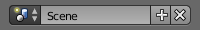

简介¶
场景是组织作品的一种方法。每个blend文件都可以包含多个场景，这些场景共享物体或者材质等其他数据。
场景管理和库的追加和关联基于Blender的 库和数据系统 。如果你不熟悉该系统，最好去阅读下相关的手册知识。

场景数据块菜单
用户可以使用 信息编辑器 标题栏中的 场景数据块 菜单选择和创建场景。
控件¶
- 场景
- 可用场景列表。
- 添加
+ - 新建
- 使用默认值新建一个空的场景。
- 拷贝设置
- 使用当前活动场景的设置，新建一个空场景。
- 关联物体
- 此选项会使用活动场景的设置和内容创建一个新的场景。然而，与复制物体的区别是，新场景的物体都是关联旧场景对应物体的。因此，新场景中物体的改动都会反映到旧场景，因为所使用的物体本质是相同的。反之亦然。
- 关联物体数据
为当前选中的场景中所有物体创建副本，但是每个副本保持对原场景对应物体数据(网格, 材质等等) 的关联。
这意味着，可以改变新场景中物体的位置、方向和大小，而不会影响到其它场景。但是任何对物体数据（网格，材质等）的修改都会影响到其它场景。这是因为所有的场景的物体关联的是同一 物体数据 实例。
- 完整复制
- 此选项会创建一个活动场景的独立副本，不会共享任何数据。复制场景物体的同时，也会复制其物体数据。
- 删除
X - 在信息编辑器中，点击场景名字旁边的 X 按钮可以删除当前场景。